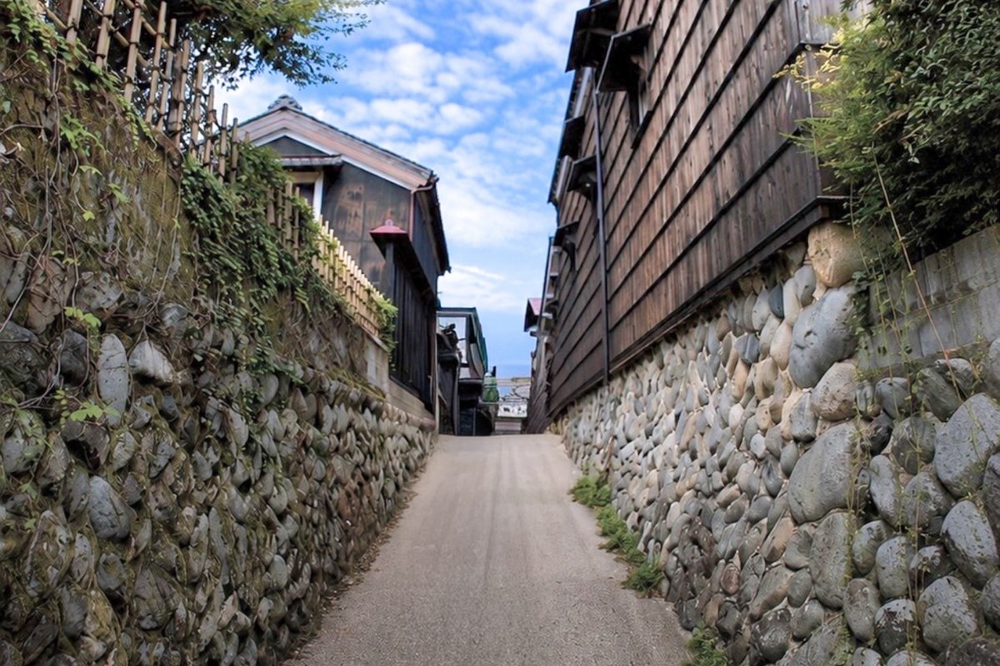
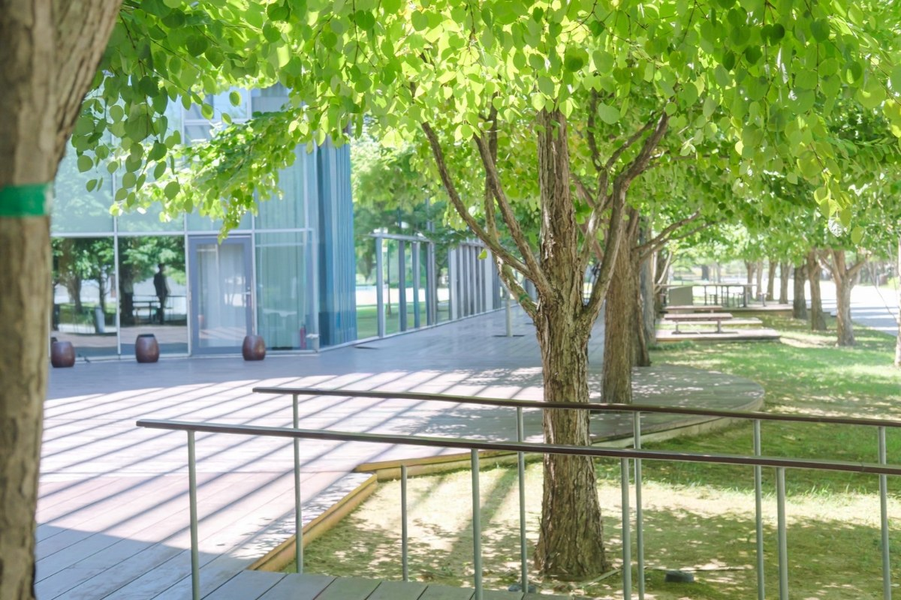
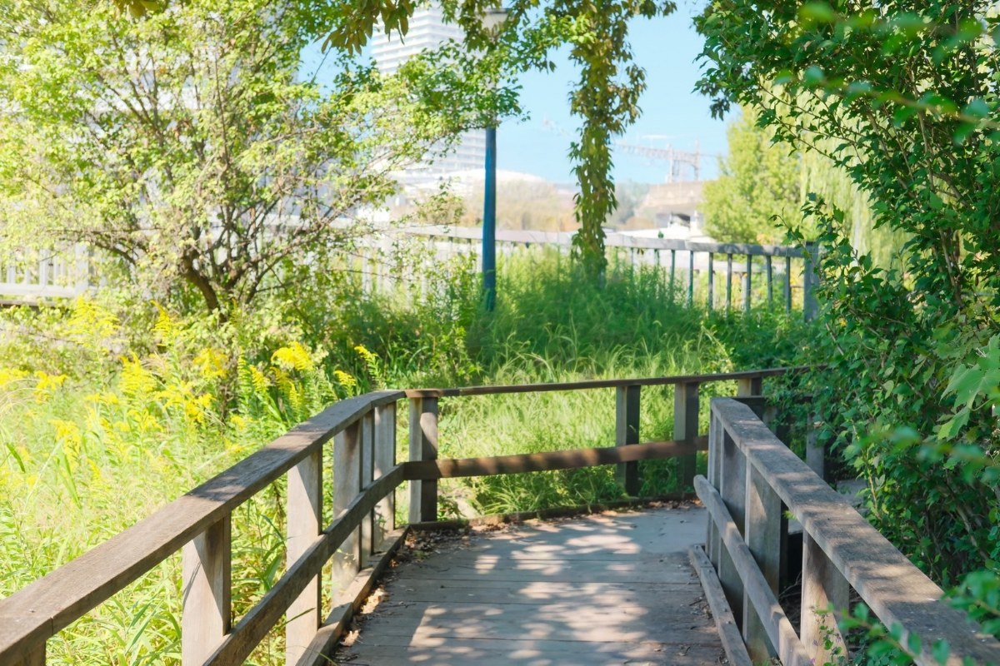

GIFU
岐阜でマッチングアプリの写真撮影
JR岐阜駅のアスティ岐阜に集合して、45分で撮影。川原町の古い町並みや駅近くの緑地を背景に、審査済みのプロカメラマンが、アプリ映えする自然な一枚を撮影します。表情やポーズはカメラマンがリードするので、撮られ慣れていない方も安心です。
- 撮影45分
- ¥6,800〜（税込）
- 通常3営業日以内に納品
- 審査済みカメラマン
- マッチング数保証
空き枠の確認は会員登録なしでできます
岐阜の季節のおすすめロケーション
川原町・メディアコスモス・清水緑地・岐阜駅周辺。季節ごとに、いちばん映えるスポットで撮影できます。

春 3〜5月
川原町広場周辺
古い町並みと、春の彩りを。
川原町の古い町並み、日中友好庭園、岐阜公園など。風情ある景色を背景に、やわらかな雰囲気の一枚を。
岐阜駅からバスで約15分（250円）
Googleマップで見る ↗

夏 6〜8月
岐阜市役所・メディアコスモス周辺
木陰の緑で、涼やかな一枚を。
木陰の多い緑地に、暑い日でも涼めるテラスやスターバックスも。夏でも快適に、爽やかな写真を。
岐阜駅からバスで約15分（250円）
Googleマップで見る ↗

秋 9〜11月
清水緑地
水と緑の遊歩道で、自然体の一枚を。
岐阜駅近くの、川沿いに続く緑地。木々と水辺を背景に、秋の落ち着いた雰囲気の写真を。
岐阜駅から徒歩約5分
Googleマップで見る ↗
冬 12〜2月
岐阜駅周辺
※天候に左右されない
天候に左右されず、街の一枚を。
室内撮影はアクティブ、夜はイルミネーションの夜景。カフェや街並みでの撮影も、緑地へも徒歩5分。
岐阜駅すぐ
Googleマップで見る ↗
※撮影場所は、撮影日の季節のロケーション（季節ごとに1か所）です。ただし、18時以降の撮影は、岐阜駅周辺のみとなります。
料金プラン
表示価格はすべて税込です。当日の追加料金はかかりません。
集合場所
当日の流れ・持ち物・服装は集合場所・撮影当日の案内をご覧ください。
予約から納品までの流れ
-
01空き枠を選んで予約
カメラマンとプランを選び、カレンダーから希望の時間をタップするだけ。決済まで完了してその場で予約が確定します。
-
02当日は手ぶらで集合
集合場所でご挨拶と撮影イメージの確認をしたら、そのまま撮影へ。ポーズや表情はカメラマンがリードするので、緊張していても大丈夫です。
-
033営業日以内にお届け
撮影後は解散。通常3営業日以内に、撮影のデータをメールでお届けします。
よくある質問
関連コラム
ほかの対応エリア：名古屋